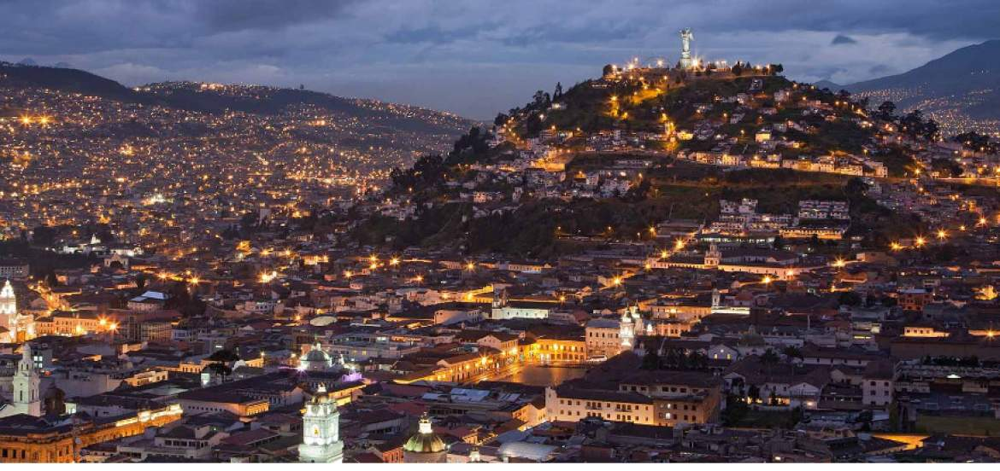
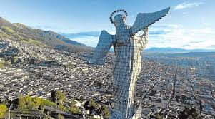

El Panecillo
20 de diciembre 2015 / Quito-EcuadorEs una elevación natural de 3.000 metros sobre el nivel del mar, enclavada en el corazón mismo de la ciudad de Quito (Ecuador). Es el sitio más visitado de la ciudad.
Por su ubicación se ha convertido en el más importante mirador natural de la ciudad, desde el que se puede apreciar la disposición urbana de la capital ecuatoriana, desde su centro histórico y hacia los extremos norte y sur. El Panecillo está coronado por una escultura gigante de aluminio de la «Virgen de Quito», creada por el español Agustín de la Herrán Matorras, el cual se basó en la obra compuesta por Bernardo de Legarda, uno de los más importantes representantes de la Escuela quiteña.